【サカつくTV アディショナルタイム #1】運営回答まとめ｜1vs1報酬・WPS・超覚醒・Ver2.4改善
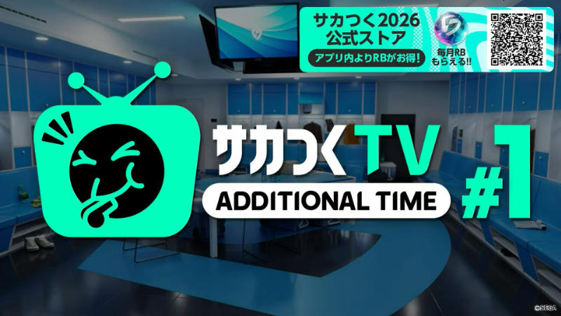
運営の公式回答と今後の予定を整理！
2026年10月15日配信の公式番組「サカつくTV アディショナルタイム #1」では、SPECIAL 1vs1の不定期開催化に伴う報酬、WPSレーティングの問題、アクセサリー検索の改善、Ver.3.0「超覚醒」などについて開発・運営陣が回答しました。確定した予定と、実現に向けて検討している要望は別物です。本記事では質問と回答を分野別に整理し、編成・育成への影響を確認します。
- SPECIAL 1vs1：報酬の取り逃しがプレッシャーになる問題などから、不定期開催へ再設計。特別な報酬増量回、WPS上位帯のSSRのかけら追加を予定
- WPS：上位帯のNPCマッチング増加によりレーティングが適正値に収束しない問題を認識。次シーズンの調整を予定
- Ver.2.4：アクセサリー絞り込みを改修予定。サカつくモード選手の選抜登録も予定
- Ver.3.0：「超覚醒」により、サカつくモード選手・SP選手のスキル枠追加などを可能にする方向で開発中
- 新サカつくモード：SP選手育成に必要なシーズン数の短縮を目指す一方、監督・コーチ雇用は現時点では想定なし
- 自動周回・MCO大会・復刻・IPコラボ：期待する声へ回答。ただし、開催・実装が決まったとは限らない
本記事は公式放送の文字起こしと番組スライドをもとに制作しています。音声自動文字起こしには誤変換があるため、表記はスライドと発言の意味を突き合わせて整理しました。詳細な実装条件は今後のゲーム内お知らせなどで変更される可能性があります。
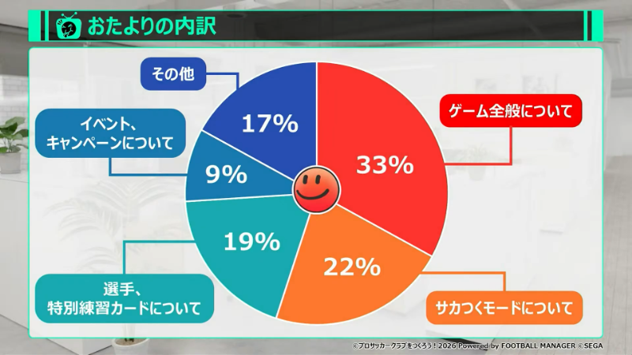
お便りの内訳は「ゲーム全般」33％、「サカつくモード」22％、「選手・特別練習カード」19％、「イベント・キャンペーン」9％、「その他」17％。今回の番組では、特に要望の多い編成・育成・周回の快適性について詳しく回答が行われました。
SPECIAL 1vs1はなぜ不定期開催に？ 報酬の補填方針も説明
不定期開催へ見直し▶ 10:19から動画を見る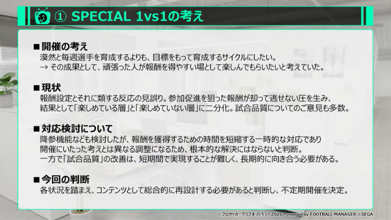
運営が本来目指していたのは、目標を持って選手を育成し、その成果を競う場としての1vs1です。しかし、実際には勝ちきれない監督が報酬交換に必要なポイントを集めにくく、報酬を逃せないというプレッシャーが生じたと説明されました。さらに試合品質への指摘も多く、運営はコンテンツを総合的に再設計する必要があると判断しています。
「降参機能を付ける」といった時短策も検討されましたが、報酬獲得の作業を短縮するだけでは根本的な解決につながらないという見解です。試合品質の改善には長期的な対応が必要であることから、まずは開催形態を見直す方針が示されました。
SSRのかけらはどうなる？ 短期・長期で対策
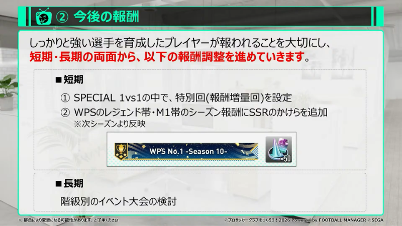
「特別回」「WPS上位帯の報酬追加」は予定として説明されたもので、具体的な配布量や実施日をすべて確定した発表ではありません。また、階級別イベント大会は開発・検討段階です。新しい報酬経路と、全員が同じ報酬を得られることは同義ではありません。
視聴者からは毎週開催の復活、近いレーティング同士での対戦、通知の改善、試合数制限の見直しなどさまざまな声も紹介されました。運営はこれらを一律に採用するのではなく、報酬格差とゲームの緊張感のバランスを取りながら考える姿勢を示しています。
WPSの上位レーティング問題｜NPC戦とポイント増減を調整へ
次シーズンの改善予定▶ 23:06から動画を見る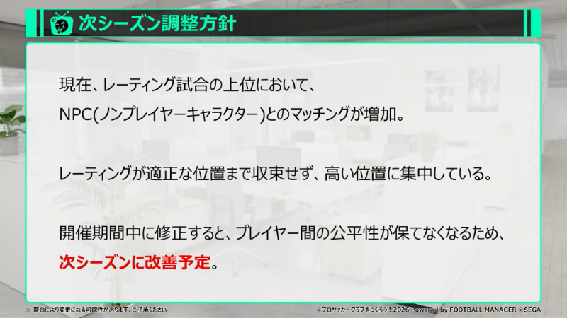
ワールドプレミアシップ（WPS）のMASTER帯以降でレーティング制が導入された後、上位の一部ではNPCとのマッチングが増え、レーティングが適正な位置に収束せず上昇し続ける状態が発生していると説明されました。
背景には、対戦相手が見つからない場合のNPCマッチング処理と、勝敗・引き分けに伴うレーティング増減の設定があるとのことです。NPCとのマッチングロジックとポイント増減を調整し、次シーズンで改善する予定と発表しました。
放送時点のレーティングの高さだけで、長期的な実力の序列が固定したとは判断しにくい状況です。調整後のポイント変動と対戦相手の傾向に注目しましょう。
Ver.2.4｜アクセサリー絞り込みの改修と選抜登録
Ver.2.4で対応予定▶ 27:45から動画を見るアクセサリーの検索条件を改善
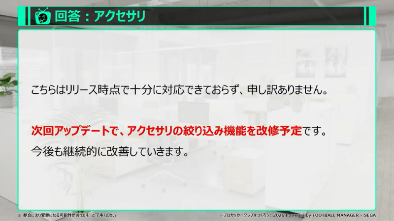
アクセサリーの所持数が増えるにつれて、狙ったパラメータや追加効果の装備を探しづらいという声が寄せられました。運営は次回アップデート（放送時点でVer.2.4）で絞り込みを改修予定と回答。シリーズ名による検索や入手直後のロックなど、関連する要望も把握していると説明しています。
ただし、要望すべてを一度に追加するわけではありません。改善項目に優先順位を付けて段階的に進める方針で、絞り込みの最終的な対応条件はアップデート情報を確認する必要があります。
サカつくモード選手が選抜チームへ
番組後半では、前回のサカつくTV #11でも予告された「サカつくモード選手の選抜登録」について再度言及。Ver.2.4で実装予定と説明されています。SP選手以外を編成候補にできるようになることで、国籍やフォーメーションコンボの不足ポジションを補う選択肢が広がる可能性があります。
フォメコン診断や最強チームシミュレーションは、既存の収録選手データに基づくツールです。今後サカつくモードの育成済み選手を個別に持ち込める仕様が発表されても、自動的に各ツールへ登録されるわけではありません。
新サカつくモード｜監督・コーチ雇用は想定なし、SP育成短縮へ
Ver.3.0に向けて開発中▶ 36:38から動画を見る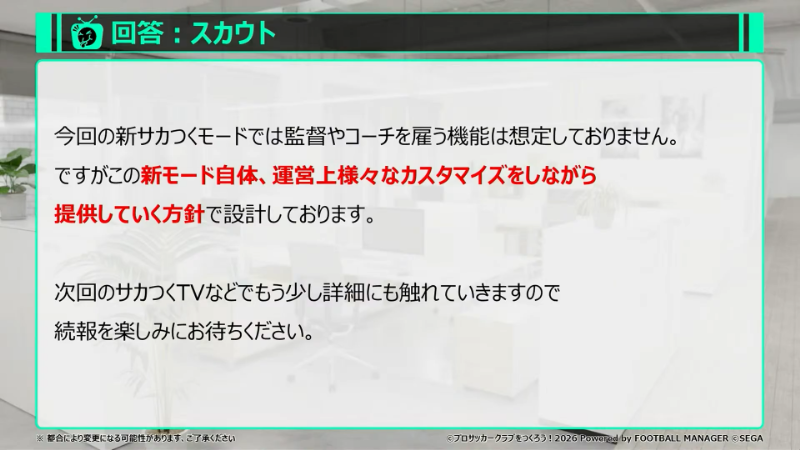
新サカつくモードでは、過去作を思わせる「スカウトマンを雇う」仕組みを検討している一方、監督やコーチを雇う機能は現時点で想定していないと回答されました。モードそのものは、運営状況に応じてカスタマイズを加えながら提供していく方針です。
もう一つ重要なのは、SP選手の育成に必要なシーズン数を短くして、より快適に育てられる方向で取り組んでいること。育成特化を掲げる新モードの狙いとして語られました。ただし、具体的な短縮幅・必要資源・育成上限は今回の放送では確定していません。
「プレー意識」の仕様が明確に｜最終値は－2～＋2
仕様説明済み・補足追記予定▶ 38:51から動画を見る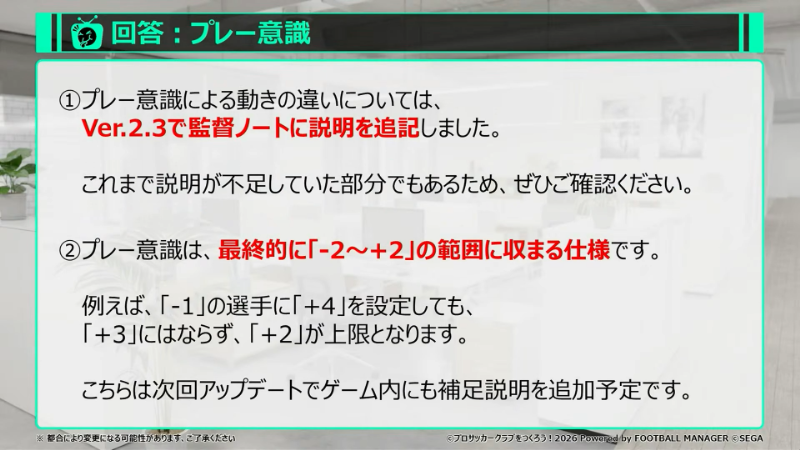
プレー意識による選手の動きの違いは、Ver.2.3でゲーム内「監督ノート」に説明が追加済みと回答しました。また、プレー意識の最終値は－2から＋2までに収まる仕様であることも明言しています。
例として、もともと－1の選手に＋4の補正を与えた場合、補正を計算した後の最終値は＋2に収まります。「＋2までしか補正が作用しない」という意味ではありません。誤解を防ぐ補足説明は、次回アップデートでゲーム内に追加予定とされました。
ゲーム内の仕様を確認する際は、当サイトの監督ノート検索も活用できます。ただし、番組後に追加される説明はサイト側のデータ更新を待って反映されます。
過去作選手・アニメ／ゲームコラボ・レジェンド選手の追加は？
「トムソン」など懐かしいサカつく選手
追加を検討中▶ 31:00から動画を見る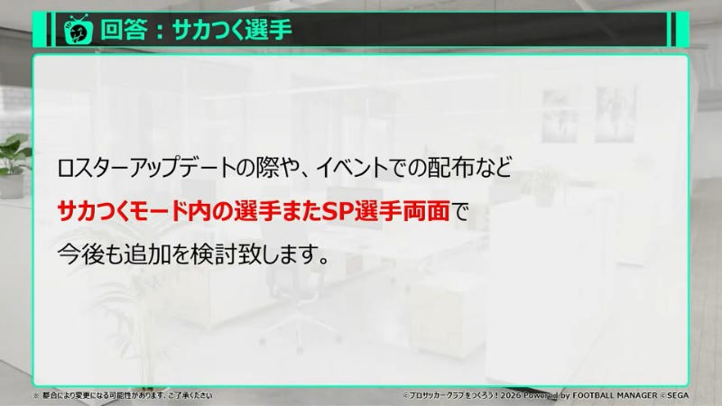
過去シリーズに登場した架空のサカつく選手を再登場させてほしい、という要望には、ロスターアップデートやイベントで、サカつくモード内の選手とSP選手の両面から追加を検討していると回答しました。具体例として挙げられた「トムソン」が登場するかどうかは未確定です。
IPコラボは具体的に検討中、作品名は未確定
▶ 41:31から動画を見る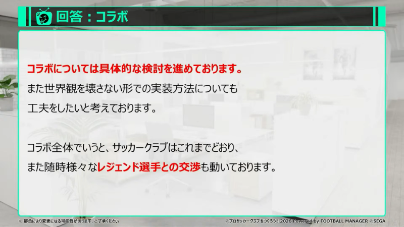
アニメやゲームなどのIPコラボについては、実際に候補先と話を進め、サッカーゲームとしての世界観を崩さない形での実装方法を検討していると説明。視聴者から挙がった作品名のいずれかに決まったという発表ではありません。
また、レジェンド選手や実在クラブのライセンスについても継続して交渉中とのことです。選手名・クラブ名、登場時期が決定した段階ではないため、続報を待ちましょう。
自動編成・ハンズフリー周回・実況／監督エディットの要望
選抜選手の自動編成｜絶好調やアビリティを考慮できる？
改善を検討中▶ 33:08から動画を見る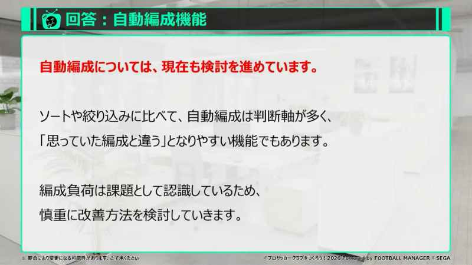
「絶好調の選手だけを抽出したい」「コンディションで発動するアビリティを含めて最適化してほしい」といった要望に対し、運営は検討中と回答。大量の登録選手から、総合力・状態・スキル・特徴など多数の条件を評価するため、想定と違う自動編成になるリスクもあり慎重な対応が必要だと説明しています。
放送中には、完全自動編成よりもまず条件で抽出する改善から着手する案も話題になりましたが、具体的な実装日や機能仕様は未発表です。
サカつくモードの完全自動周回は慎重
検討中・実装約束なし▶ 45:35から動画を見る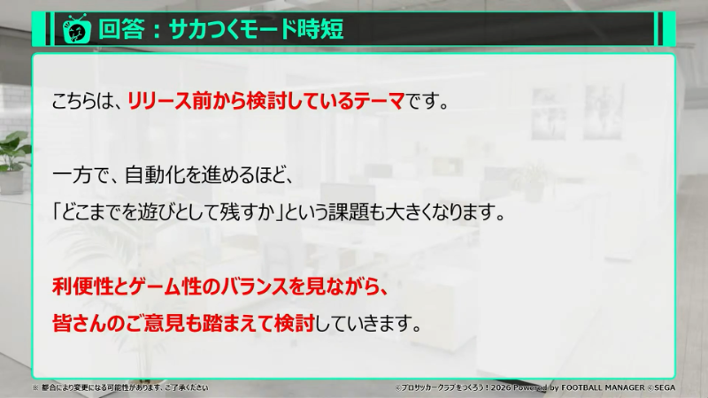
1シーズンを開始から終了までハンズフリーで進めたいという要望は、リリース前から検討しているテーマだと説明されました。ただし、操作を自動化しすぎると「サカつくモードそのものを遊ぶ意味」が薄れるという懸念もあるため、完全自動周回の実装は約束されていません。
運営は、単純な放置機能の追加だけではなく、育成やクラブ運営をもっと楽しく・快適にするゲーム設計を重視する姿勢です。
実況・解説、監督エディットなども要望として把握
▶ 51:52から動画を見る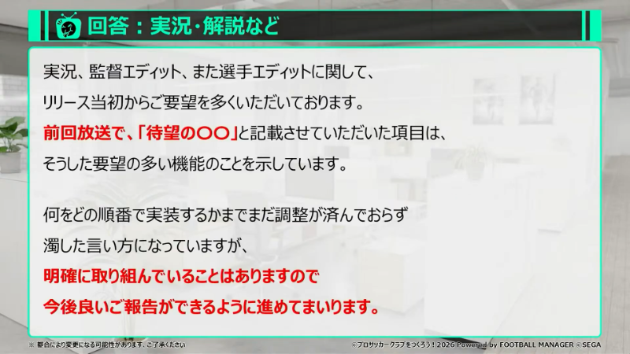
試合実況・解説や監督エディット、選手エディットなどについても、運営は多くの要望があることを認識。前回発表したロードマップ中の「待望の○○」がこうした要望の多い機能を指すと説明しました。ただし、具体的にどれがいつ実装されるかはまだ発表されていません。
Ver.3.0「超覚醒」｜スキル枠拡張で好きな選手をさらに育成
Ver.3.0向けに開発中▶ 53:56から動画を見る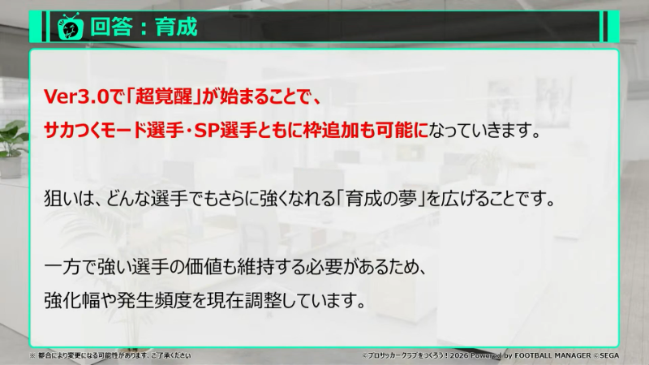
今回、育成関連で特に大きかった回答が「超覚醒」によるスキル枠の追加です。サカつくモードのJリーグ選手などでは、スキルやアビリティの枠が少なく、好きな選手を十分に伸ばせないという声が寄せられていました。
運営はVer.3.0の超覚醒で、サカつくモード選手だけでなくSP選手も含めてスキル枠を追加できるようにする方向を説明。特別練習によるスキル継承など、育成の選択肢を広げる狙いです。
すでにスキル枠が多い選手が、一律にさらに枠を増やせると約束したわけではありません。強化幅や超覚醒の発生頻度は調整中で、強力な既存選手の価値も維持しながら設計すると説明されています。枠数・素材・成功率などの具体的な確定数値は公表されていません。
無課金・微課金でも選手を集めて楽しめるようになる？
育成・編成の選択肢を拡張予定▶ 58:32から動画を見る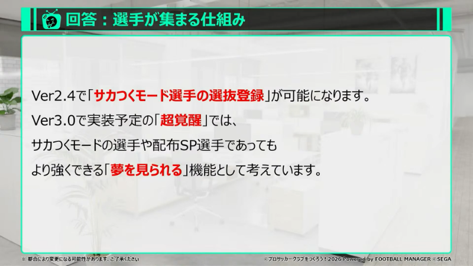
「ガチャに頼らず、ある程度の選手を集められる仕組みが欲しい」という要望に対して、運営は選手数が少ないと編成の幅が狭まり、楽しみづらくなる点に理解を示しました。
対応の柱として挙げたのは、Ver.2.4のサカつくモード選手の選抜登録と、Ver.3.0の超覚醒です。サカつくモード選手や配布SP選手に向き合って育成することで、編成の戦力として活躍できる可能性を広げる方向です。ただし、ガチャの排出率変更や無償配布の増加がこの場で決まったわけではありません。
MCO対抗イベントや不具合・復刻への回答
MCOメンバーで戦う大会は実現する？
長期的に検討▶ 1:01:04から動画を見る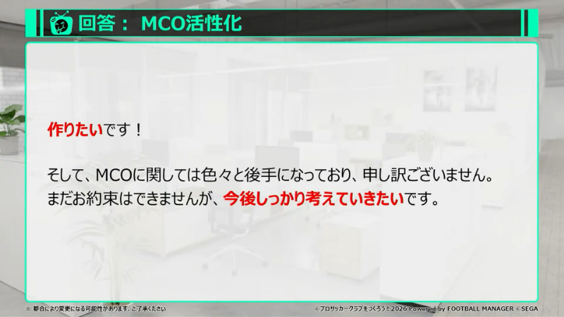
MCOメンバーが選手を持ち寄り、チーム対抗のトーナメントを開催するといった案には、運営側から前向きな反応がありました。ただし、不具合修正やVer.3.0など優先度の高い開発があるため、現時点で実施を約束できないと明言しています。長期的に取り組みたいテーマという位置付けです。
不具合改善・限定選手の復刻・選手紹介文
アップデートのたびに不具合が発生している点を謝罪し、デバッグ体制の改善と実際の修正成果で示していく方針
開催したい意向はあるものの、ライセンス・契約上の制約があり、時期や実施は未確定
過去作を含めた選手プロフィールやコメントの充実は要望として認識し、可能な範囲で取り組む方針
今回のお便り形式を継続するか含めて検討し、ユーザーとの対話の場を確保していきたい考え
視聴者プレゼントと「サカつくTV #12」次回放送
番組でJリーグセレクトSP選手スカウトチケット10枚を案内
番組終盤には視聴者プレゼントとして、「JリーグセレクトSP選手スカウトチケット」10枚が案内されました。プレゼントの受け取り条件・期間は、ゲーム内お知らせなどで確認してください。 ▶ 1:08:35から動画を見る
サカつくTV #12は2026年10月26日（月）に配信予定
番組内で日付を発表▶ 1:10:39から動画を見る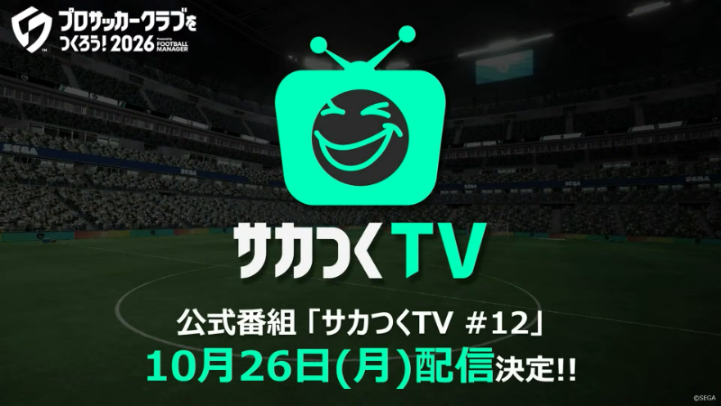
次回の通常番組「サカつくTV #12」は2026年10月26日（月）の配信と発表されました。Ver.2.4の詳細、今後の大会情報、Ver.3.0に関する先出し情報などを扱う予定です。放送内容や時刻は、最新の公式案内を確認してください。
攻略DB視点の注目ポイント｜今後の編成・育成はどう変わる？
ここからは公式発表を踏まえた攻略DB側の整理・考察です。運営が確定仕様として発表した内容ではありません。
1vs1の開催機会が減る一方、WPS上位帯のシーズン報酬や報酬増量回を新たな獲得経路として位置付ける方針です。今後は「1vs1を毎週こなす」だけでなく、WPSで一定のランクを維持する価値も増える可能性があります。ただし上位帯に到達できないプレイヤーの報酬機会については、階級別大会などの続報を確認したいところです。
Ver.2.4でサカつくモード選手を選抜登録できるようになっても、それだけで直ちに既存の強力なSP選手と並ぶとは限りません。Ver.3.0の超覚醒で育成の上限や継承の選択肢が広がると、初めて好きな選手を使い続ける編成が現実的になる可能性があります。
アクセサリー検索やWPS調整は、放送中に対応時期の目安が示されました。一方でMCO大会、完全自動周回、復刻、コラボなどは、検討・交渉段階にとどまっています。今後の公式番組やアップデート告知で実装内容が固まってから、編成や育成の方針に反映するのが確実です。
まとめ｜運営の回答で見えた「遊びやすさ」と「育成の幅」の改善方針
アディショナルタイム #1では、SPECIAL 1vs1やWPSへの具体的な調整方針に加えて、アクセサリーの絞り込み、サカつくモード選手の選抜登録、超覚醒によるスキル枠拡張などが語られました。特に「強い選手だけを揃える」以外の編成・育成を楽しめる方向が、今後の軸になりそうです。
一方で、完全自動周回・IPコラボ・MCO対抗イベント・復刻などは期待できる話題であっても、実装決定ではありません。次回のサカつくTV #12やアップデートの詳細発表を確認し、発表段階と実装済みの状態を区別して判断しましょう。
本記事は2026年10月15日の公式番組内容を整理したものであり、記事作成後の実装状況・仕様変更を反映しているとは限りません。画像と文字起こしで内容を照合しましたが、具体的な確定仕様、配布条件、開催時期は最新のゲーム内お知らせ・公式情報が優先です。
© サカつく2026攻略DB / ソニオTV